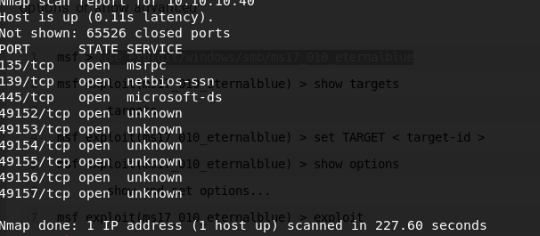

so we'll look at several different way to get shell in that machine .Metasploit and manual way.
So MS 17.0.1.0 is a vulnerability that was released couple of years ago.
Heath " This vulnerability is a couple of years old but it's still very significant. Now you may have heard of the wannacry vulnerability that used MS 17 0 1 0 as part of its payload in order to navigate around networks and do ransomware on networks. So very very disgusting vulnerability very very costly right. Why is this critical?
Well you see this on penetration tests all the time especially in definitely internals not as much on the external side. You know there are tools now that people can search for this and if you still have this running on your external network chances are you've probably been popped. In fact the latest time that I have seen it was this past week while doing an internal penetration test. !!!!!So this vulnerability while simple is super critical it allows us to have a remote code execution and gain system access on a machine on top of that It's still very very common in networks.
"

heath check Windows 7 Professional 7601 Service Pack 1 (Windows 7 Professional 6.1) as first thing.
First things first we want to confirm that we think it is eternal blue.
We want to make sure that we can see that.
So what we can say is we can say search ms17-010 something like that.
So that's important first right. You don't just want to fire and explode without confirming or least having a good hunch that this exists. !!!!It should also be noted that this exploit can tip a machine over. So if you're doing it on an internal environment make sure that it's not a significant machine likeit. This was a domain controller. !!!You'll probably want to call up you know the the client and say hey I'm about to use an exploit.
now let's look at different options.
as you learned above payload is non-stage reverse shell payload because of that it has underscore in "shell'_'reverse_tcp" which sends all shellcode at once.
if you're having trouble getting a shell and you're pretty sure that there's a exploit available consider changing this to a stage payload here.
For that
we can say that. and by pressing tab we could see which options available for us as payload. We'll use staged meterpreter payload.
we can take these hashes and crack them with hashcat and see if there is any foothold in network.
So now we can take these hashes and we can try to pass them around the network.
We can also dive into the machine and look for valuable information we can look at the routing table.
The true
spoolsv
.
exe
file is a
safe
Microsoft Windows system process, called "Spooler SubSystem App". However, writers of malware programs, such as viruses, worms, and Trojans deliberately give their processes the same file name to escape detection.
also we can load some extensions to meterpreter shell let's do that.
meterpreter is very very flexible. There is another useful tool called incognito. also meterpreter has bunch of post exploitation commands.
------------------------------------------MANUAL METHOD------------ https://github.com/3ndG4me/AutoBlue-MS17-010
go to there
there are times that you have ms17-010 but can't exploit because you're not
valid user so for that to prove the client that there is ms17 you can use eternal_checker.py.
Follow the github repo instructions.
msfvenom: payload generator.